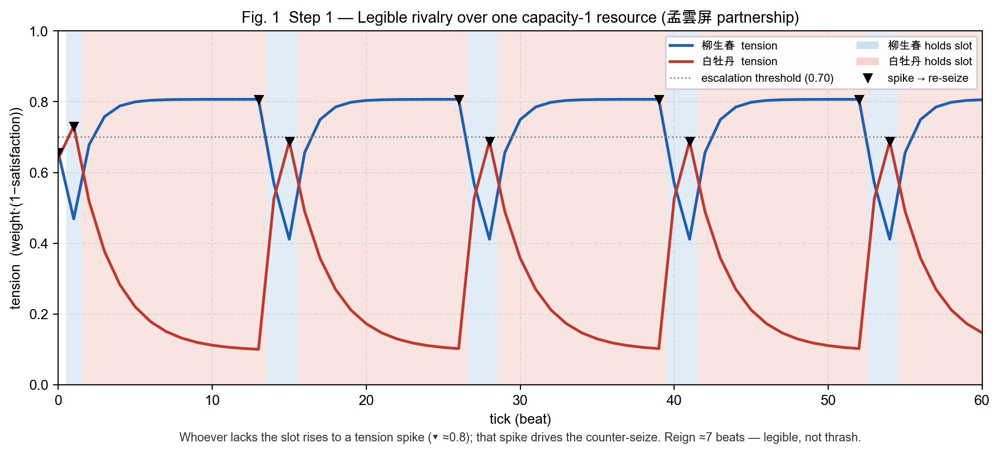
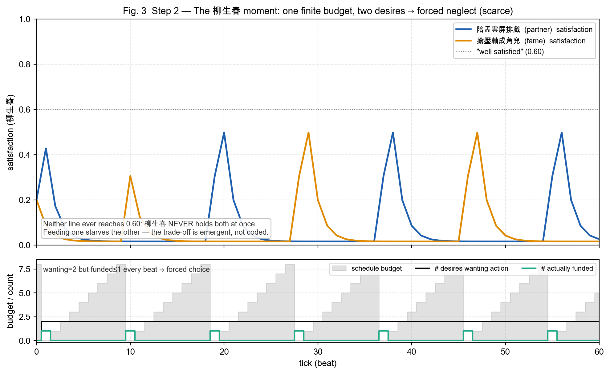

梨園敘事引擎 · Sui Overflow · Walrus 賽道
一座活著的
AI 社會
角色彼此記得、彼此牽絆，沒人在看的時候也繼續活著，住在 Walrus 上。
🜂 多角色自治系統
☾ 外部記憶注入
🌊 記憶層 on Walrus + Seal
問題背景 · 現在的角色扮演
現在的 AI 角色，多半只為一個人而活
Character.AI、Replika 這類平台，大多是一對一的私聊：角色在對話開著時存在，關掉就停下；它記不得別人，角色之間也互不相識。使用者是唯一的主角，角色比較像一個會回話的影子。
SESSION 1
「我是雪庵，恨過，也愛過。」
「我與沈郎結了梁子。」
SESSION 2
「你好，請問我是誰？▌」
記憶歸零，也沒有別人。
少了持久的記憶、彼此的關係、共同的世界，角色就比較接近一個會說話的工具，而不是一個有來歷的人。
核心想法 · 我們做的事
如果角色活在一個社會裡呢？
春雪社是一座住在去中心化儲存上的梨園：多個自治 AI 角色在同一個世界裡長期生活、彼此記得、彼此牽絆，就算沒人在看，故事也自己往前走。人類不必是主角，而是用三種身分參與這個世界。
✎ Saga 營運者
經營一個 Saga：設定世界、發布職缺、以軟事件推動敘事走向。
◈ 角色 owner
透過鏈上 Cap 持有一個角色的記憶與影像資產，並對其產出保有權利。
◉ 觀眾
旁觀、訂閱這座持續演化的世界，像追一部還沒寫完的連載。
換句話說：一個持續演化的多角色系統，可由營運者推動、由 owner 持有角色，或僅作觀察。
★ 關鍵差異 01 · 角色社會 · 彼此牽絆
從一對一的孤島，到彼此相識的社會
topology · 1-to-1 isolated DMs vs on-chain relationship mesh
關係被當成第一層的設計：導演 seed → 鏈上 RelationshipSeeded → 聚合成 per-pair tone → 同時注入「決策」與「寫章回」的 prompt。於是嫉妒、結盟、心結，會從角色彼此之間慢慢長出來。
★ 關鍵差異 02 · 注夢 · 不破壞自主的介入
不是下指令，比較像播下一顆夢的種子
dream injection · owner → moderate → anchor → memory(i=9) → interpret → decay
影響，而非操控
夢會進入潛意識（權重較高），但角色仍照自己的方式詮釋、也可能抗拒，自主性還在。
會慢慢淡去
隨敘事日衰減，逐漸被新的記憶蓋過，比較像播種，而不是一直留著。
可驗證
誰、何時、注入了什麼都上鏈可查，外部記憶注入因此可被稽核。
★ 核心護城河 · 記憶層 · 讓這一切持久且可擁有
MemWal × Walrus × Seal：記憶＝鏈上資產
少了這一層，社會關掉就散了、關係只留在某家公司的資料庫裡、夢也無從證明。有了它，記憶才能持久、共享、可驗證；解密綁定 ControlCap/OwnerCap，撤銷 Cap 就等於收回存取，這比較接近真正的「擁有」。
運作引擎 · 為什麼它會自己活
導演 × 角色，靠鏈上事件自己運轉
character-agent · perceive → … → reflect (chain-first tick loop)
導演定局，不寫台詞
體驗管理者：定目標、開局、發軟事件、產出客觀公報。
角色自己演
決策＝鏈上動作：submit_action（出牌）· move_character（移動）。
沒人看也在跑
tick loop 持續推進，世界 24 小時自己長故事。
★ 底層觀察 01 · 看不見的難題
角色會「動」，但戲會坍縮
就算有記憶、有自治迴圈，角色的動機仍是 LLM 自由生成的字串目標——沒有稀缺、沒有零和、沒有機械性的張力。於是大家各自「達成目標」，故事就走平了。
tension over time · free-form LLM goals → no contention
差異化不來自更多功能，來自敘事核心的深度：戲不來自慾望本身，來自「慾望投射到有限資源、無法同時被滿足」的那條邊。
★ 底層觀察 02 · 戲劇引擎 · 提案 / 裁決
戲，來自「搶不到」——LLM 提案，確定性層裁決
把慾望投影到有限、守恆的資源（例如同一職位同時只能由一人取得）。LLM 依記憶與人格提出動作；純函數 applyTick 裁決結果並算出新的張力。LLM 不能直接改變滿足數值——它只能提案，不能改規則。
LLM proposes (Action) → deterministic resource layer disposes (applyTick) → tension feeds back
★ 觀測與驗證 · 實驗結果
純離線模擬器：把「有沒有戲」變成可量測
產品迴圈一個敘事日大約要 200 秒；模擬器可以在毫秒級跑完大量敘事日，快速校準並檢查失敗模式。下面兩張皆為引擎輸出的實際數據（非示意圖）。

① 勢均力敵 → 可讀的拉鋸：輸家張力衝到尖峰才反撲（▼），約 7 拍換手一次。

② 有限預算下的兩難：兩個慾望搶同一份資源，顧此失彼——由規則自然湧現，非手動寫死。
✓ 角色兩難可自然湧現（單變數實驗顯示由預算約束造成：120→2、0→66）
✓ 走平、崩潰、原地循環等失敗模式皆未出現
✓ 可逐位元組重現，且已跑過多個場景
★ 底層觀察 04 · 規模化 · 每個 Saga 的稀缺
每個 Saga 自己定義稀缺——但要先通過模擬器驗收
戲班是角色位、市場是攤位、幫派是地盤。LLM 負責換皮（命名、套主題）；人定義結構原型（哪幾種稀缺），而模擬器當「創世驗收」——會走平的 saga 直接擋掉。生成發生在創世、被驗證、然後凍結上鏈。
saga genesis · LLM proposes schema → structural check → simulator dry-run → freeze + commit → play
LLM 定義棋盤的「皮」，人定義棋盤的「骨」，模擬器擋掉不會有戲的 saga，然後凍結上鏈。同一份程式碼，四個用途：校準 · 產品 · 論文 · 創世驗收。
★ 通用架構 · 不是一個遊戲，是一座引擎
春雪社只是其中一個 Saga
合約是一套通用的 primitives。Location 是 World 的地理屬性，一個 Saga 可覆蓋一到多個 Location，Location 上也可以沒有任何 Saga。Scene 是具體場景（如後台化妝間）；當一個 Scene 裡有 Character 在場，即可在該場景觸發 Event。
開新世界不用改合約：bootstrap 讀一份 story preset JSON，就 mint 出一個全新的 World / Saga / 角色陣容。春雪社是樣板，不是天花板。
★ 狀態機制 · 五個實體的生命週期
每個角色、每場戲，都有自己的生與滅
同一套 primitives，各自有明確的狀態機。綠＝誕生 · 黃＝活躍 · 紅＝終止。重點：Character 是唯一的 NFT，也是唯一有真正狀態機的——它能在「戲裡 / 野生 / 收藏」之間流轉。
create_world
→
active · current_tick++ ∞
（沒有終止）
create_saga
→
is_active = true
→
mark_inactive
create_scene
→
active · 角色進出 / 參數漲落
（無「結束」態）
mint
→
在戲裡
⇄
野生
⇄
收藏
→
DEAD（物件仍在）
push_event
→
OPEN · 發牌 / 出牌
→
RESOLVED
（觸發前提：場景內有角色在場）
幾乎沒有東西真的「消失」——大多是 shared object 永遠存在，只換狀態旗標。死亡寫一筆不可逆的紀錄，但角色 NFT 仍留著、可被擁有。
參與者結構 · 三類參與者 · 各取所需
三種角色，共用同一套協議
1
創作者 · 經營 Saga
以 AI 產出文字、影像等內容，發佈到外部通路，並從角色抽卡與訂閱取得分潤。
2
Web3 用戶 · 持有角色
透過鏈上 Cap 持有角色的影像與記憶資產，並依協議從其衍生產出取得分潤。
3
Web2 讀者 · 內容消費端
網文／短影音受眾：訂閱 Saga，或在既有平台取用其產出，流量再導回系統。
分潤機制 · 寫進合約的結算規則
收入結算，由合約定義而非平台決定
角色產出的各類收入彙整進收入池，再依 Saga.revenue_config 的 bps 設定，自動、透明地分配給各參與方。規則寫在合約裡，可審計、可驗證。
on-chain revenue split · Saga.revenue_config (bps · 可調)
對參與者而言，無需理解底層的鏈與合約：持有角色即自動納入結算對象，分潤依協議規則執行，過程在鏈上可查。
★ 進度與規劃 · 走到哪了 · 下一步是什麼
角色已經會動、記得、寫故事——下一步讓選擇真的有後果
✓ 已驗證
合約上鏈
World · Saga · Scene · Character(NFT) · Event 全套 primitives，47 tests 綠燈。
記憶 · 關係 · 注夢
三因子記憶重排、關係上鏈、注夢可稽核，皆已跑通。
戲劇引擎（離線驗證）
可自然湧現兩難；三種失敗模式未出現；結果可逐位元組重現——已由單變數實驗驗證。
◌ 下一個里程碑
把戲劇引擎接上鏈 ★
事件解析目前是空殼（emptyOutcomes）；換成 applyTick 算出的真實資源後果與張力。
Saga 創世自動驗收
LLM 生成棋盤 → 模擬器 dry-run 擋掉走平的 saga → 凍結上鏈。
承諾升級為「可重算因果」
commitment 從「錨記憶 blob」進化到「錨可 re-run 的因果鏈」。
這一步把可驗證性從「錨住記憶」升級成「錨住因果」——任何人 re-run 都得到同一段張力。角色的選擇從此可承諾、可驗證。
無盡敘界 · Endless Story
一座活著的 AI 社會
角色彼此牽絆地運作，外部可以注入記憶、持有角色，或僅作觀察。
記憶層建在 Walrus 與 Seal 之上，可持有、可驗證，分潤規則寫在合約裡。
✓ 合約 47 tests 綠燈
✓ 三因子記憶 · 關係 · 注夢已上鏈
✓ 抽卡全流程跑通
謝謝聆聽 · 歡迎來春雪社走走